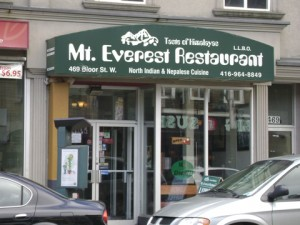

シタールを聴きながらインド料理を味わう＠Mt.Everest Restaurant

我が家で良く利用するGROUPONを利用して、インド料理を食べに行った。行ったのはダウンタウンのBLOORとSPADINAの交差点から近いところにあるインド料理の店、Mt.Everest Restaurant。
食べようと決めていたのは、マライコフタ。カシューナッツのクリーミーなカレーのなかに、カッテージチーズとじゃがいもでできた柔らかい団子が入っている。ベジタリアンだけどリッチなのでベジタリアンでないひとも満足できる一品。日本人にも食べやすく、バターチキンが好きな人はきっと好きなはず。
マライコフタは、インド滞在中にお気に入りになったメニューのひとつ。
滞在したハイデラバードのホテル、TAJ DECANでは、ほぼ毎日のように食べていた。ハイデラバードはなんでも激辛だったが、この料理だけは辛さがマイルドだったので、これしか選択肢がなかったというのも事実なのだが、それにしてもおいしかったので毎日のように食べても全然苦ではなかった。毎日オーダーしていたのだが、おもしろいのはグレービーの色が毎日違っていたこと。あれ、昨日はもっと白っぽかったのに、きょうは赤っぽいね、などと話していたのを思い出す。
カナダに帰ってからもふと食べたくなるインドの思い出の味なのだ。
さて、マライコフタ（Malai Kofta$9.99）はトマトが入っているのでトマトにINTOLERANCE(不耐性）がある私はたべられなかったが、J次郎は久々の懐かしい味に大満足した様子。
私はPaneer Tikka$13.99を頼んだ。たっぷりの野菜とともにタンドーリで焼かれたパニールが熱々の鉄板の上に載せられてでてきた。こちらもヘルシーなベジタリアンメニュー。
この日は水曜だったので、７時半近くになるとシタールの演奏もはじまり雰囲気満点。そういえばふたりともシタールの生演奏聴くのは始めてだった。心地良い音色だった。
ここはネパール料理もだす店なので、ぜひ次はネパールの料理にも挑戦してみたいところ。
 にほんブログ村
にほんブログ村
 にほんブログ村
にほんブログ村